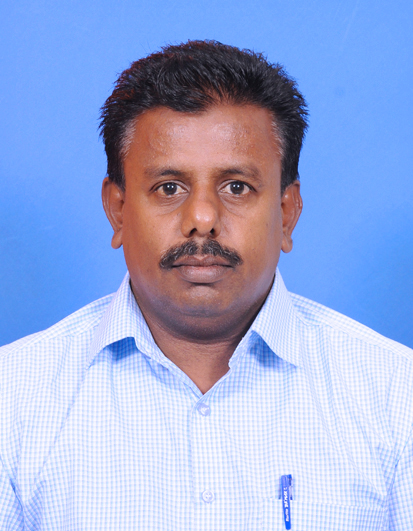
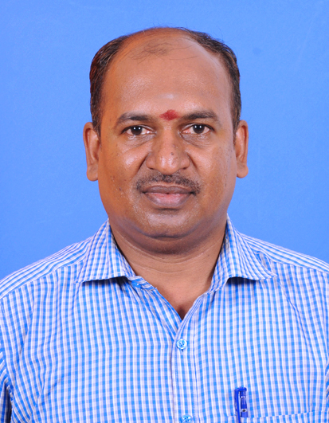
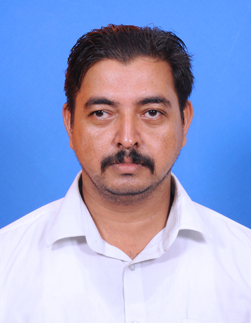
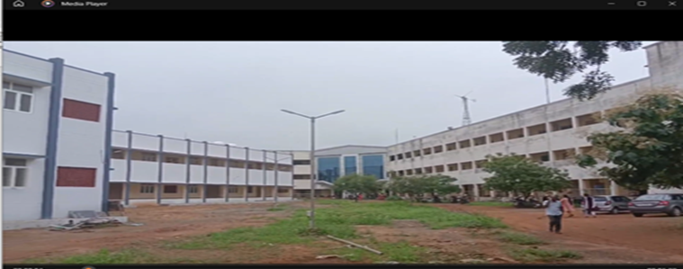
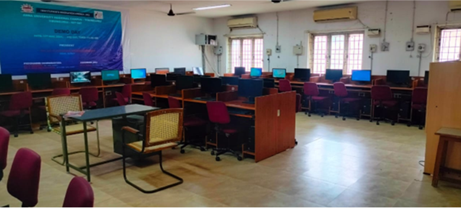
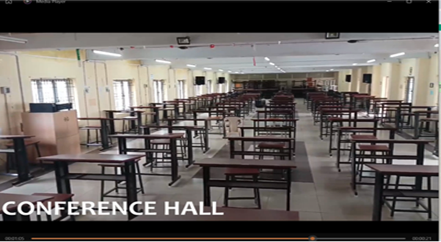
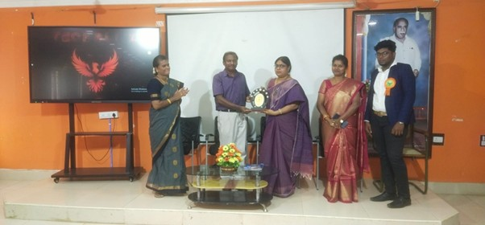
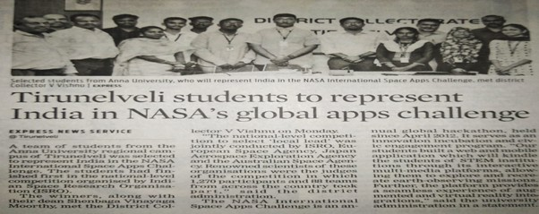

About the Department
The department was started in the year 2008 with three dual degree programmes namely M.Tech. in Computer Science and Engineering, M.Tech. in Information Technology and M.Tech. in Software Engineering, PG programme namely M.E. in Computer Science & Engineering (FT & PT) and Ph.D. Programmes.
There were no further intakes for dual degree programmes after 2009. UG courses namely B.E. in Computer Science and Engineering and B.Tech. in Information Technology were started in the year 2010 with an approved intake of sixty in each. However, there was no further intake for the UG and PG programmes after 2013 and 2018 respectively.
At present, the department offers B.E. in Computer Science and Engineering and Ph.D. programmes (in both FT & PT modes). The Department is blessed with a band of twelve dedicated faculty members who are entrusted with the great task of molding the young minds and carrying out research in the areas of Internet of Things, Data Analytics, Image Processing, Data Mining, Wireless Networks, Cloud Computing, etc.
The Department is equipped with two labs to cater to the needs of the students. Ample opportunities are provided to equip the students be it a classroom lecture or group discussion, project work or field trip, curricular assignment or co-curricular activity. The faculty members guide the students to acquire correct values and develop wholesome attitudes in order to achieve a harmonious blending of human values with knowledge.
Courses Offered
Courses Offered
- B.E Computer Science and Engineering
- Ph.D. programmes (FT & PT)
Faculty Profile
Head of Department
Teaching Staff

Non-Teaching Staff

Mr. D. Gnanaraj
Professional Assistant

Mr. C. Perachi Selvan
Junior Assistant

Mr. S.P. Sakthi Kumar
Office Assistant
Department Activities 2024-25
Department Association – Tech Society Inauguration 2025
September 12, 2024
The Computer Science and Engineering department Association academic year 2024-25 was inaugurated on 12th September 2024. Dr. A. Suruliandi, Professor and Head from Department of Computer Science, Manonmanium Sundaranar University was the chief guest. In the afternoon, an online Guest Lecture was arranged on the topic "Deep Learning – A hands on Approach" handled by Dr. V. Vimala, Associate Professor, Department of CSE, Chennai Institute of Technology.
District Level Resource Person ICT Training for PG Teachers
October 15-16, 2024
The district level Resource Person ICT Training for PG Teachers was held at CSE Lab. The training programme was conducted by District Institute of Education and Training with ICT sessions handled by department teaching staff. More than 50 PG school teachers participated.
Government Siddha College Students Microsoft Office Training
November 2024
One-day Training Programme on Microsoft Office for Government Siddha College students, Tirunelveli was conducted at CSE Lab. More than 70 students participated in this training programme.
Institution of Engineers India (IEI) Inauguration Ceremony
April 6, 2025
The Institution of Engineers India Student Chapter Inauguration ceremony was conducted on 06-04-2025. The ceremony was inaugurated by Dr. S. Kalippan, Former Vice Chancellor of Anna University of Technology, Tirunelveli.
National Level Technical Symposium TechBlitz-25
April 6, 2025
The National level technical symposium TechBlitz-25 was conducted with sponsorship from Anna University, Chennai. Dr. V. Kavitha, Professor and Dean, University College of Engineering, Kanchipuram was the chief guest. More than 500 students from all over India participated. There were 8 events including technical and non-technical competitions.
Guest Lecture on Awareness on IE(I)
March 26, 2025
Dr. R. Velayutham, F.I.E., Principal, Einstein College of Engineering delivered a guest lecture on "Awareness on IE(I)" covering activities of IE(I), benefits of membership, and procedures for obtaining various levels of membership.
TANGO SET Exam
April 6-9, 2025
The department provided 100+ computers and lab facility along with teaching and non-teaching staff members for the successful conduct of the TANGO SET exam.
Gallery






Consultancy Projects
The department has undertaken various consultancy projects. For detailed information, please download the consultancy document.
Programmes Organized
Faculty Training and Development Programmes
- Seven Day Faculty Development Programme on "Theory of Computation" conducted from 29th April to 05th May 2019 sponsored by Centre for Faculty Development, Anna University, Chennai.
- Seven Day Faculty Development Programme on Distributed System conducted from 27th November to 3rd December 2017 sponsored by Centre for Faculty Development, Anna University, Chennai.
- A 7 day FDTP on CS6801-Multicore Architecture and Programming sponsored by Centre for Faculty Development, Anna University, Chennai was organized by the department from 1st to 5th and 9th to 10th Dec 2016.
- A 7 day FDTP on IT6702 Data Warehousing and Data Mining sponsored by Centre for Faculty Development, Anna University, Chennai was organized by the department from 25th to 31st May 2016.
- Seven Day Faculty Development Programme on "Databases Management Systems and Advanced Databases" conducted during 4th – 10th December 2013 and sponsored by Centre for Faculty Development, Anna University, Chennai.
- Seven Day Faculty Development Programme on "Mobile and Pervasive Computing" conducted during 4th – 10th June 2013 and sponsored by Centre for Faculty Development, Anna University, Chennai.
- Seven Day Faculty Development Programme on "Digital Image Processing" conducted during 7th – 13th December 2012 and sponsored by Centre for Faculty Development, Anna University, Chennai.
Workshops
- Two Day Hands-on Workshop on Python Programming organized by the Director, Academic Courses and Sponsored by the Director, CFD from 21-08-2017 to 22-08-2017.
- Two Day Workshop on Cloud OpenStack Kilo11, on 29th and 30th October 2015.
- Two Day Workshop on Hands on approach to Proficient Document Writing using LATEX" conducted during 12th – 13th October 2013.
- Two week ISTE Workshop on "Database Management Systems" funded by IIT Bombay conducted during 21st –31st May 2013.
- Two Day Workshop on Hands on Approach to Wireless Network Simulation using NS2 conducted during 4th – 5th December 2012.
Conferences
- CSIR Sponsored National Conference on Computing and Communication NCCC'15 organized jointly by the Department of CSE and ECE from 4th to 5th May 2015.
- International Workshop and Conference on "Research Contributions in Technology and Applications", 27th – 28th March 2015.
- National Conference on Computing and Communication NCCC'14 organized jointly by the Department of CSE and ECE from 3rd to 4th April 2014.
- National Conference NACET 2011 organized jointly by all the Departments conducted on 6th May 2011 at Anna University of Technology, Tirunelveli.
Symposiums
The Student's technical association TECH SOCIETY organized:
- An Inter college Symposium NOVATEUR 2013 on 4th October 2013.
- A Two day Intra College Symposium TECHNOPS – 2K19 conducted on March 14th & 15th 2019.
Other Programmes
- A 5 day Computer Training Programme for the Staff of Police Department was conducted free of cost from 15th to 19th June 2015. Training was offered on Computer Fundamentals, Working with Windows 8.1 and Microsoft Package. 30 staff of the police department were benefitted out of it.
- A 5 day Computer Training Programme for the Students from Government Schools was conducted free of cost from 15th to 19th June 2015. Sixty students from government schools participated in the programme. Training was offered on Computer Fundamentals, and Microsoft Package.
Research
Publications
| Journals | |
|---|---|
| National | International |
| 9 | 115 |
| Conferences | |
|---|---|
| National | International |
| 132 | 69 |
Ph.D Scholars Produced
- N. Kanthimathi
- Jeyabharathi
- Bibal Benifa
- Shirly
- Ani Brown Mary
- Suganya
- Jaithumbi
- Ajay Amrit Raj
Patents Filed
-
Indian Patent Application No. 201641043187A
-
Indian Patent Application No. 201741028756
Books / Book Chapters
-
"Computer Forensics"
Student Achievements
-
"Mobile Customization for intimating location information and profile changing"
-
"Development of Hardware for Naadi Pariksha"
-
"Development of Hardware for Naadi Pariksha"
-
"Development of Low Cost Device for assisting Fishermen"
-
"IoT based System for Banana Plantation Monitoring and Disease Detection"
-
"IoT based System for Banana Plantation Monitoring and Disease Detection"
-
"Smart Walking Stick"
-
"Low memory Device enhancer with battery saver"
-
"Palmleaf Character Recognition"
Rank Holders
| Name | Branch | Batch |
|---|---|---|
| Naga Sudha | M.E CSE | 2016-2018 |
| Renuka Pavithra | M.E CSE | 2016-2018 |
| Kalai Selvi | M.E CSE | 2014-2016 |
| Abinaya Laxmi | M.E CSE | 2013-2015 |
| Rabiyathul Athabiya A | M.E CSE | 2011-2013 |
| Ani Brown Mary | M.E CSE (P.T) | 2010-2013 |
| Henvin Selva Rani A | B.Tech IT | 2009-2013 |
| Chitra N | B.E CSE | 2009-2013 |
| Angelin Sheeja | B.E CSE | 2009-2013 |
| J. Packia Priya | B.Tech IT | 2009-2013 |
| Herold Robinson | M.E CSE (P.T) | 2008-2011 |
| Devi Dayal Vinayaki | M.Tech CSE | 2008-2013 |
Collaboration
-
Aakash Project Centre
-
IIT Bombay & IIT Kharagpur
-
NPTEL
-
IIRS